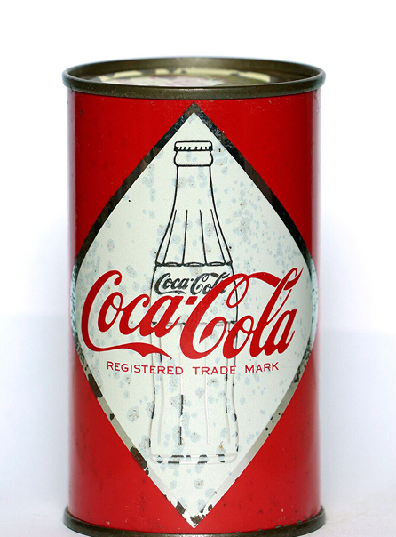

Origini belliche
L’idea di confezionare la Coca-Cola in metallo risale a ben prima della sua effettiva commercializzazione di massa. Già negli anni ’30 l’azienda iniziò a testare contenitori metallici, ma le limitazioni tecniche del tempo, come la reazione del liquido con il metallo che ne alterava il gusto, bloccarono il progetto. Una spinta decisiva arrivò durante la Seconda Guerra Mondiale, quando la necessità di rifornire le truppe al fronte richiese contenitori leggeri, resistenti e facili da trasportare. A causa del razionamento dei metalli per scopi bellici, la produzione su larga scala per i civili dovette attendere la fine del conflitto e il perfezionamento dei rivestimenti interni.
La lattina di Coca-Cola per il mercato domestico fece il suo debutto ufficiale nel 1960. Queste prime versioni erano realizzate in acciaio e presentavano una grafica che riproduceva la sagoma della celebre bottiglia Contour, per rassicurare i consumatori sulla continuità del prodotto. La vera svolta tecnologica arrivò però pochi anni dopo con l’introduzione dell’alluminio, un materiale molto più leggero e facile da raffreddare rispetto all’acciaio.

1960, Stati Uniti.